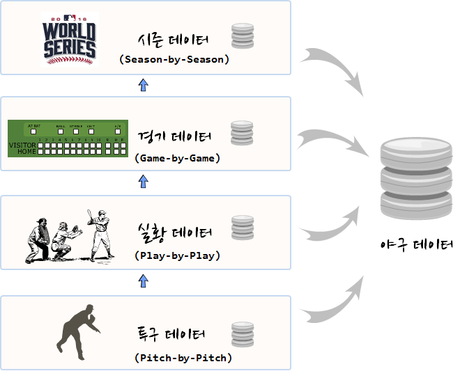

데이터 제품
야구 MLB
학습 목표
- 메이저리그 야구 데이터 저장소를 파악한다.
- 야구 데이터 통계분석하는 과정을 이해한다.
1. 메이저리그 야구 데이터 저장소 1 2 3
미국 메이저리그 야구에 대한 데이터는 야구 선진국으로 오래전부터 미국인의 사랑을 받아온 스포츠라 유구한 역사와 전통을 자랑하고 있으며 야구 데이터도 참 다양하고 깊이도 있다.

1.1. 시즌별 데이터 – Lahman
Lahman 데이터베이스는 야구시즌에 대한 거시적인 데이터를 제공하고 있다.
http://www.seanlahman.com/baseball-archive/statistics/ 사이트에서 다운로드 받아 사용하면 된다.
1.2. 경기별 데이터 – Retrosheet
Retrosheet는 1989년 델라웨어 대학 David Smith 교수가 시작한 자발적 조직으로 경기별(Game-by-Game) 데이터 수집을 목표로 하고 있다. Guide to Retrosheet Game Logs 문서에 자세한 수집항목정보가 담겨있다.
http://www.retrosheet.org/gamelogs/index.html 사이트에서 파일을 다운로드 받아 사용하면 된다.
1.3. 경기실황 데이터 – Retrosheet
경기실황 데이터도 [Retrosheet](http://www.retrosheet.org/에서 제공하는데 야구경기 실황을 중계하는 개념으로 경기 이벤트가 발생될 때마다 기록된다. 시즌별(Season-by-Season), 경기별(Play-by-Play), 경기실황별(Play-by-Play)로 상세히 넘어가고, 결국 이는 투수가 투구를 해야 야구경기를 해야 하기 때문에, 투구별(Pitch-by-Pitch) 데이터로 모아지게 된다.
1.4. 투구별 데이터 – PITCHf/x
2008년부터 PITCHf/x 시스템을 통해서 투수가 투구정보가 제공된다. PITCHf/x에서 자세한 정보를 확인한다.